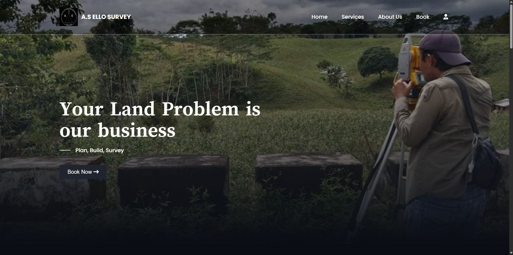
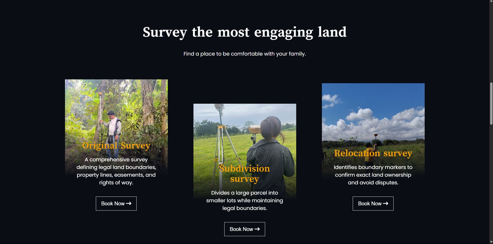
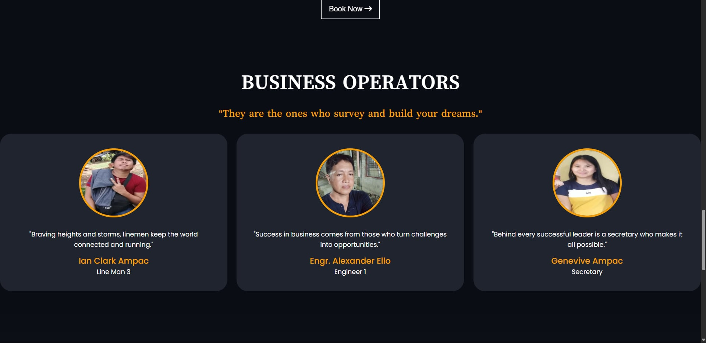
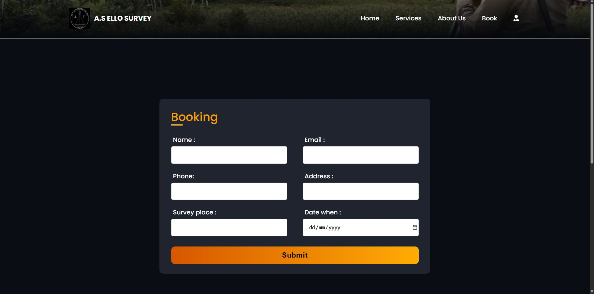

Smart Swine Management System
An embedded system with automated misting and feed optimization for swine management.
- Embedded
- Automation
- Misting control
- Feed optimization
Richard Zorilla
Hello, I'm
Computer Engineering
I'm a computer engineering student who gets a thrill when a circuit finally comes alive. From ESP32 and Arduino boards to 3D-modelled enclosures, I turn ideas on paper into machines that sense, think, and move, and I'm always chasing the next thing to build.
I'm Richard Zorilla, a Computer Engineering student with a strong interest in programming, digital hardware, embedded systems, databases, and computer-aided design. I have experience working with C++, Java, MATLAB, PHP, MySQL, and Verilog. I also have experience with microcontrollers such as Arduino and ESP32, where I explore how software can interact with sensors, circuits, and other electronic components.
I am particularly interested in the connection between hardware and software. I enjoy designing circuits, programming microcontrollers, developing embedded systems, working with databases, and creating 3D models and mechanical designs using Fusion 360. I am also interested in 3D printing, including understanding FDM 3D printing, designing individual parts, and creating assemblies for practical applications.
Through my academic projects, I have worked on different areas of Computer Engineering, including programming, electronics, networking, system analysis, database management, and hardware design. I continue to develop my technical knowledge by working on hands-on projects and exploring different technologies and tools.
I believe that the best way to improve is through hands-on experience. I continue to develop my skills by building projects, solving programming problems, experimenting with hardware, learning new software tools, working with databases, and applying what I learn to practical situations. My goal is to become a skilled Computer Engineer capable of designing and developing systems where hardware and software work together effectively.
I work across every layer of a hardware project: the code that runs on it, the circuits and microcontrollers behind it, the housing that protects it, and the tools that keep it all organised. Here's what I use most.
I don't just want things to work. I want to know why they work, and how far I can push them. As a computer engineering student, I'm happiest at the bench with a board, a datasheet, and a problem nobody has solved for me yet. These are the areas I keep coming back to.
Every device starts as a problem on paper. I love turning that into something physical and reliable: choosing components, planning the layout, and refining until it holds up in the real world.
Firmware is where hardware comes alive. I'm drawn to the details: reading sensors, driving actuators, handling timing and interrupts, and getting the most out of a microcontroller.
From a simple sensor stage to a full control board, I enjoy analysing how a circuit behaves, prototyping it on the bench, and debugging until every signal does exactly what it should.
I model enclosures and mechanical parts in Fusion 360 so the electronics and the housing are designed together, not as an afterthought.
Projects
Projects where code meets hardware: microcontrollers, sensors, and automation built to solve real, practical problems.
An embedded system with automated misting and feed optimization for swine management.
Projects
Websites built to be simple, clear, and useful for the people who use them.
A survey website built for A.S Ello.




Projects
My 3D designs from Fusion 360, modelled as enclosures and mechanical parts for my electronics projects. Drag to rotate, and right-click drag (or use two fingers) to move.
Have a project, question, or opportunity? I'd love to hear from you. I'm always open to talking about embedded systems, hardware design, 3D design, or web projects, and to collaborating on something new.